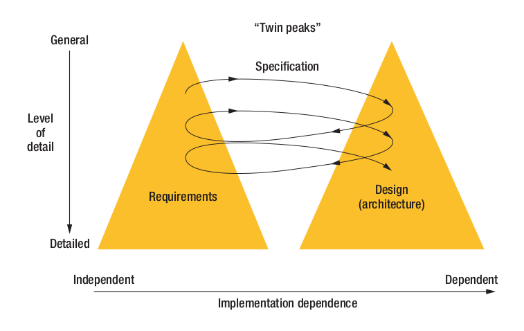

Balancing Top-Down/Bottom-Up Design Approaches¶
Автор раздела: Ivan Zakrevsky
Влияние архитектуры на требования¶
📝 "On the other hand, agile and lean projects implicitly rely on short iterations and early delivery of executable code into customer hands. Architectural design emerges incrementally in response to customer needs. Although agile processes bring numerous benefits to a project, the somewhat shorterterm perspective means that developers could be forced into expensive refactoring efforts to deliver new functionality late in the project. Agile processes that elicit architecturally significant user stories in early iterations can balance the way in which functionality is delivered to the customer and enable developers to make informed decisions about the design and construction of the architecture."
—"The Twin Peaks of Requirements and Architecture" by Jane Cleland-Huang, DePaul University; Robert S. Hanmer, Alcatel-Lucent; Sam Supakkul, Sabre; Mehdi Mirakhorli, DePaul University

Figure A. The twin peaks model. Though a series of iterations, the model captures the progression from general to detailed understanding. The image source is "The Twin Peaks of Requirements and Architecture" by Jane Cleland-Huang, DePaul University; Robert S. Hanmer, Alcatel-Lucent; Sam Supakkul, Sabre; Mehdi Mirakhorli, DePaul University¶
📝 "5.3.2 Iteration and recursion in requirements engineering
Since different groups of stakeholders often view the system from differing levels of system structure, it is necessary to define and document requirements statements at lower, more detailed levels than just the overall system-of-interest. Allocating or distributing the system requirements to the system elements accomplishes this. The activity of allocating requirements to system elements is part of the Architecture Definition process and proceeds in parallel with the definition of the system architecture. There may be multiple iterations between the requirements processes and other processes in the life cycle (e.g., architecture, design) to resolve trade-offs between the requirements and architecture. The main forms of appropriate iteration within requirements engineering include:
purposeful iteration within requirements analysis, between analysis activities;
planned iteration from downstream activities back to requirements analysis because of a predicted, significant, genuine rate of change of requirements that reflect change of need;
planned or unplanned iteration from downstream activities back to requirements because of feasibility and balance issues arising from risk due to technology or implementation issues, or risk due to limited knowledge of them;
unplanned iteration from downstream activities back to requirements because of other solution issues, such as changes to or defects in non-developmental system elements, or obsolescence of system elements;
reverse engineering of requirements for reasons of regulatory compliance; and
limited iteration from downstream activities back to requirements analysis because of the reality that requirements can never be perfect, nor is it cost-effective to try to make them so."
—"ISO/IEC/IEEE 29148:2018 Systems and software engineering - Life cycle processes - Requirements engineering"
📝 "Используйте итерацию
Возможно, у вас были случаи, когда вы так много узнали во время написания программы, что желали бы написать ее заново, опираясь на полученные знания. Этот же феномен наблюдается и при проектировании, но этап проектирования короче, тогда как влияние, оказываемое им на последующие этапы, выражено сильнее, поэтому вы вполне можете выполнить этап проектирования несколько раз. Проектирование — итеративный процесс.
Выйдя из точки А и достигнув точки Б, не останавливайтесь, а вернитесь в точку А. Изучая возможные варианты проектирования и пробуя разные подходы, вы будете рассматривать и высокоуровневые, и низкоуровневые аспекты.
Общая картина, которую вы получаете при работе над высокоуровневыми вопросами, поможет вам лучше понять низкоуровневые детали. Детали, которые вы узнаете при работе над низкоуровневыми вопросами, помогут вам создать прочный фундамент для принятия высокоуровневых решений. Некоторые конфликты между высокоуровневыми и низкоуровневыми соображениями — вполне здоровое явление; это напряжение способствует созданию структуры, более стабильной, чем структура, полностью созданная "сверху вниз" или "снизу вверх".
Iterate
You might have had an experience in which you learned so much from writing a program that you wished you could write it again, armed with the insights you gained from writing it the first time. The same phenomenon applies to design, but the design cycles are shorter and the effects downstream are bigger, so you can afford to whirl through the design loop a few times.
Design is an iterative process. You don't usually go from point A only to point B; you go from point A to point B and back to point A.
As you cycle through candidate designs and try different approaches, you'll look at both high-level and low-level views. The big picture you get from working with high-level issues will help you to put the low-level details in perspective. The details you get from working with low-level issues will provide a foundation in solid reality for the high-level decisions. The tug and pull between top-level and bottom-level considerations is a healthy dynamic; it creates a stressed structure that's more stable than one built wholly from the top down or the bottom up."
—"Code Complete" 2nd edition by Steve McConnell, перевод: Издательско-торговый дом "Русская Редакция"
📝 "Нисходящий и восходящий подходы к проектированию
Слова «нисходящий» и «восходящий» могут казаться устаревшими, но они предоставляют много ценной информации об объектно-ориентированных способах проектирования. Нисходящее (top-down) проектирование начинается на высоком уровне абстракции. Например, вы сначала определяете базовые классы или другие неспецифические элементы проекта. По ходу работы вы повышаете уровень детальности и определяете производные классы, сотрудничающие классы и другие детали.
Восходящее (bottom-up) проектирование начинается со специфики и постепенно переходит ко все большей общности. Как правило, оно начинается с определения конкретных объектов, на основе которых затем разрабатываются более общие объединения объектов и базовые классы.
<...>
Никакого конфликта нет
Главное различие между нисходящей и восходящей стратегиями в том, что одна является стратегией декомпозиции, а вторая — композиции. В первом случае вы начинаете работу с общей проблемы, разбивая ее на управляемые фрагменты, во втором вы начинаете с управляемых фрагментов, составляя из них общее решение. Оба подхода имеют достоинства и недостатки, которые следует рассмотреть в контексте конкретной проблемы.
<...>
Подведем итог: нисходящее проектирование обычно начинается с простого, но иногда низкоуровневые сложности прорываются на вершину, и это может приводить к усложнению системы, которого можно было избежать. Восходящее проектирование начинается со сложных аспектов, но определение этой сложности на ранних этапах позволяет лучше спроектировать высокоуровневые классы... если к этому моменту сложность не потопит всю систему!
В конечном счете это не конкурирующие стратегии — они дополняют друг друга. Проектирование — эвристический процесс, а значит, универсальных решений не существует. Проектирование содержит элементы метода проб и ошибок. Пробуйте разные подходы, пока не найдете тот, что вас устроит.
Top-Down and Bottom-Up Design Approaches
"Top down" and "bottom up" might have an old-fashioned sound, but they provide valuable insight into the creation of object-oriented designs. Top-down design begins at a high level of abstraction. You define base classes or other nonspecific design elements. As you develop the design, you increase the level of detail, identifying derived classes, collaborating classes, and other detailed design elements. Bottom-up design starts with specifics and works toward generalities. It typically begins by identifying concrete objects and then generalizes aggregations of objects and base classes from those specifics.
<...>
No Argument, Really
The key difference between top-down and bottom-up strategies is that one is a decomposition strategy and the other is a composition strategy. One starts from the general problem and breaks it into manageable pieces; the other starts with manageable pieces and builds up a general solution. Both approaches have strengths and weaknesses that you'll want to consider as you apply them to your design problems.
<...>
To summarize, top down tends to start simple, but sometimes low-level complexity ripples back to the top, and those ripples can make things more complex than they really needed to be. Bottom up tends to start complex, but identifying that complexity early on leads to better design of the higher-level classes—if the complexity doesn't torpedo the whole system first!
In the final analysis, top-down and bottom-up design aren't competing strategies—they're mutually beneficial. Design is a heuristic process, which means that no solution is guaranteed to work every time. Design contains elements of trial and error. Try a variety of approaches until you find one that works well."
—"Code Complete" 2nd edition by Steve McConnell, "Chapter 5.4. Design Practices :: Top-Down and Bottom-Up Design Approaches", перевод: Издательско-торговый дом "Русская Редакция"
Cм. также:
"The Twin Peaks of Requirements and Architecture" by Jane Cleland-Huang, DePaul University; Robert S. Hanmer, Alcatel-Lucent; Sam Supakkul, Sabre; Mehdi Mirakhorli, DePaul University
"Code Complete" 2nd edition by Steve McConnell
"Chapter 5.4. Design Practices :: Top-Down and Bottom-Up Design Approaches"
"Software Architecture in Practice" 4th edition by Len Bass, Paul Clements, Rick Kazman
"20.2 The Steps of ADD"
Step 2: Establish Iteration Goal by Selecting Drivers
Step 3: Choose One or More Elements of the System to Refine

{kind=link}